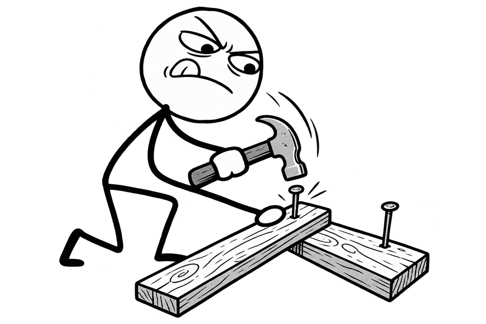

Carregando…
AI Engineering Framework
Build
on Base.
Uma especificação que o seu agente de IA lê para criar e manter o
.ai/: a fonte única de verdade de engenharia de IA do
projeto, independente de stack e de provedor.

Por que existe
A IA mudou rápido e os repositórios encheram de documentação sem padrão. Cada desenvolvedor monta o próprio setup, e o time inteiro colhe resultados diferentes.
O BoB define uma fonte de verdade por projeto, que qualquer agente e
qualquer pessoa segue do mesmo jeito. Claude, Copilot, Cursor e
Codex recebem só um adaptador mínimo apontando de volta para
.ai/, nunca uma cópia que diverge.
Como funciona
Nove camadas. Oito delas viram uma pasta dentro de .ai/.
- 01ConstituiçãoPrincípios imutáveis
constitution/ - 02InstruçõesComportamento de engenharia
instructions/ - 03AgentesPapéis
agents/ - 04SkillsConhecimento especializado
skills/ - 05SpecsO que deve ser construído
specs/ - 06WorkflowsComo tarefas comuns são executadas
workflows/ - 07ComandosComo tarefas são acionadas
commands/ - 08ContextoConhecimento específico do projeto
context/ - 09AdaptadoresTornam tudo consumível por qualquer ferramenta
fora de .ai/
Quickstart
Dois pontos de partida, o mesmo comando.
/bob-start
Projeto novo
- Aponte seu agente para o repositório do BoB e peça para seguir
start.md. - Rode
/bob-start. - Responda o bootstrap: idioma, ferramentas de IA, board, agentes, skills, MCPs. Aprove o preview em
start.temp.md. - O
.ai/nasce estruturado para o projeto.
Codebase existente
- Mesmo ponto de partida:
start.mde/bob-start. - Antes de perguntar qualquer coisa, o BoB descobre stack, docs e convenções que já existem.
- Se já houver um
.ai/de outra origem, ele pergunta se você quer migrar. Nunca reorganiza em silêncio. - Rode
/bob-map-codebasepara mapear o contexto com evidência real.
Comandos
Essenciais
- /bob-start
- Configura o .ai/ na primeira vez, ou mostra o estado atual e os comandos.
- /bob-map-codebase
- Mapeia o repositório e atualiza o contexto em .ai/context/.
- /bob-concerns
- Audita SOLID, duplicação e nomenclatura.
- /bob-create-agent
- Cria um novo papel de agente.
- /bob-create-skill
- Cria uma skill do zero.
- /bob-add-skill
- Instala uma skill pronta de um marketplace.
- /bob-add-mcp
- Configura um servidor MCP a partir de um link.
- /bob-create-spec
- Cria a especificação de uma nova feature.
- /bob-validate
- Verifica se o .ai/ está completo e consistente, sem alterar nada.
- /bob-update
- Atualiza o BoB e aplica as novas regras no repositório.
- /bob-adr
- Registra uma decisão técnica como ADR.
- /bob-onboarding
- Guia um novo dev pelo repositório. opcional
Agentes
Chamam um papel direto, sem passar pela orquestração do /bob-techlead.
- /bob-techlead
- Divide a demanda por área e aciona os agentes certos, terminando com revisão.
- /bob-architect
- Planeja a implementação e compara alternativas.
- /bob-developer
- Implementa uma tarefa pontual.
- /bob-reviewer
- Revisa uma mudança já implementada.
- /bob-tester
- Define a estratégia e os casos de teste.
- /bob-researcher
- Pesquisa e compara opções técnicas.
- /bob-security
- Analisa a segurança de uma mudança ou área.
- /bob-frontend
- Cria ou revisa interface com o design system existente. opcional
User Story e cards
Do happy path ao PR. Só existem se o projeto adotou o fluxo de US e cards. opcional
- /bob-us-create
- Cria a User Story com o happy path.
- /bob-us-edge-cases
- Completa com os edge cases, via perguntas.
- /bob-us-plan
- Gera a spec técnica da US aprovada.
- /bob-us-to-task
- Quebra a spec em cards de tarefa.
- /bob-us-task-implement
- Implementa uma task.
- /bob-us-task-pr
- Abre o PR de uma task para a branch da US.
- /bob-us-sync-pr
- Abre o PR que junta várias entregas da US.
- /bob-us-pr-review
- Faz uma revisão consultiva de um PR.
- /bob-us-pr-adjust
- Aplica os ajustes pedidos na revisão.
Nenhum comando encontrado.
Mudanças recentes
A versão mais recente, direto do CHANGELOG.md.
FAQ
O básico
- O que é o BoB, na prática?
-
Uma especificação, não uma biblioteca nem uma CLI. São arquivos Markdown que o seu agente de IA lê para criar e manter o
.ai/dentro do seu repositório: constituição, instruções, agentes, skills, specs, workflows, comandos e contexto do projeto.O resultado também é só Markdown: legível por pessoas, versionável no Git e independente de qualquer ferramenta.
- Por que “BoB”?
- Build on Base. A ideia é que todo trabalho com IA no projeto seja construído sobre a mesma base, o
.ai/, em vez de cada pessoa montar a sua. - Preciso instalar alguma coisa?
-
Não há pacote nem dependência. Você precisa de um agente de IA que leia e escreva arquivos no repositório, e de acesso ao BoB: pelo link do GitHub ou por um clone local.
O clone local é o caminho mais simples para atualizar depois, porque o
/bob-updatefazgit fetchnele antes de comparar versões. - Quais ferramentas de IA funcionam?
-
Qualquer agente que leia arquivos. No bootstrap você escolhe quais ferramentas o time usa, e só elas recebem adaptador. A spec já descreve Claude Code, Codex, Cursor, GitHub Copilot, Gemini CLI e Windsurf. Para uma ferramenta fora dessa lista, o agente pergunta onde ela lê instruções e comandos.
O
AGENTS.mdé sempre criado, porque várias ferramentas já o leem nativamente. Em ferramentas sem slash commands, basta citar o arquivo de.ai/commands/na conversa. - Funciona com a minha stack?
- Sim. A spec não assume linguagem, framework nem plataforma: serve para mobile, web, backend, desktop, monorepos e bibliotecas. O que é específico do seu projeto vem do
/bob-map-codebase, que preenche.ai/context/com evidência real do código, como arquivos, padrões e convenções encontrados. - Em que o BoB difere de outras abordagens?
-
Muitas soluções resolvem uma parte do problema: um arquivo de instruções para uma ferramenta, ou um fluxo de specs isolado. O BoB organiza o conjunto inteiro em uma fonte canônica e trata cada ferramenta como um adaptador fino. Trocar ou adicionar uma IA não cria uma cópia das regras que diverge com o tempo.
Além disso, o próprio agente mantém o
.ai/ao longo do projeto, sempre com preview, aprovação e um changelog próprio.O BoB também vai além das regras para a IA e propõe o processo do time:
- Gitflow: uma branch e um PR por tarefa, com gates de code review e de QA antes de chegar a produção.
- Kanban: um board com estados definidos, de
NEWaDONE/PROD. Um card reprovado volta para o desenvolvimento com o motivo registrado. - Nomenclatura de branch: o padrão
<tipo>/<id>-<slug>, comofeat/1234-adicionar-botao-login. - Onboarding de novos devs: um agente opcional que avalia o nível técnico do dev, monta um roteiro de estudo, faz perguntas de verificação e propõe a correção de um bug controlado em uma branch local.
- Modo Professor: para devs menos experientes, o agente ensina a stack e a arquitetura ativamente. Ao final, o dev pode pedir que todos os agentes do projeto passem a explicar de forma mais didática.
Se o time já tem convenção própria de Git, board ou branches, ela prevalece. Essas propostas valem só quando não há nada definido.
No seu projeto
- O BoB altera meus arquivos sem perguntar?
-
Não. Toda gravação passa por um preview (
start.temp.mdouupdate.temp.md) que você revisa e aprova antes de qualquer arquivo definitivo ser escrito.Em uma migração, ele pode renomear arquivos e realocar informações, mas nunca reescreve nem resume o conteúdo existente. Se o repositório ainda não tem Git, ele recomenda copiar a pasta antes, para que dê para reverter.
- Já tenho
CLAUDE.md, regras do Cursor ou docs de IA. E agora? - Antes de perguntar qualquer coisa, o
/bob-startinspeciona o repositório: stack, documentação, convenções de Git e arquivos de IA que já existem. Ele mostra o que encontrou e pergunta se você quer migrar para a estrutura do BoB. Nada é reorganizado em silêncio, e se você não quiser migrar, nada muda. - Devo commitar o
.ai/? -
A recomendação é commitar. O
.ai/é a fonte de verdade do time: quando está no repositório, todo mundo trabalha com as mesmas regras, e mudanças nele são revisadas em PR como qualquer código.Isso é só uma recomendação. Cada time pode usar como preferir, inclusive mantendo partes fora do Git.
- O agente lê tudo a cada tarefa?
-
Não. O BoB usa divulgação progressiva: o agente sempre carrega as instruções gerais e o registro de erros corrigidos, e o resto só quando a tarefa pede. Uma tarefa de banco de dados, por exemplo, carrega a skill de banco, e uma de UI carrega a de UI. Isso economiza contexto e reduz ruído.
Pelo mesmo motivo, a própria spec é dividida em arquivos por tema, e o
start.mdindica o que ler para cada tipo de tarefa. - E quando duas regras entram em conflito?
- Vale a ordem de precedência: restrições da plataforma, depois a constituição do projeto, as instruções, o papel do agente, as skills, a spec da feature e, por último, o pedido da tarefa. Assim, um pedido pontual não passa por cima de um princípio do projeto sem que isso fique explícito.
- Preciso usar board, User Stories e cards?
- Não. O fluxo de US e cards é opcional, e os comandos
/bob-us-*só existem se o projeto adotar esse fluxo. Se o time já tem board e convenção de branch, o BoB segue o que existe. Se não tem nada, ele sugere um padrão (GitHub Projects, gratuito).
Versões e evolução
- Como recebo as novidades do BoB?
-
Rode
/bob-update. Ele busca a versão mais recente do BoB, compara com a versão registrada no topo do.ai/README.md, resume em linguagem simples o que mudou e mostra o preview do que seria alterado.Nada é aplicado sem aprovação, e uma mudança MAJOR nunca entra automaticamente. Se você recusar, o
.ai/continua funcionando na versão anterior. - O projeto é estável?
- O BoB já é usado em projetos diferentes, por pessoas diferentes, que propõem mudanças e melhorias o tempo todo. Por isso está em evolução constante. Toda mudança segue SemVer e entra no changelog, e as mudanças recentes aparecem aqui no site.
- Qual a diferença entre
spec/etemplates/? spec/define o que cada peça do.ai/deve conter e quais regras seguir.templates/traz o conteúdo pronto que o agente copia e adapta durante o bootstrap, como agentes, comandos e os arquivos de contexto.- Como contribuo?
- Comece por uma issue descrevendo o quê e o porquê. Depois, uma branch por issue (
add,remove,improveoufix) e um PR com a entrada noCHANGELOG.md. Detalhes emCONTRIBUTING.md.